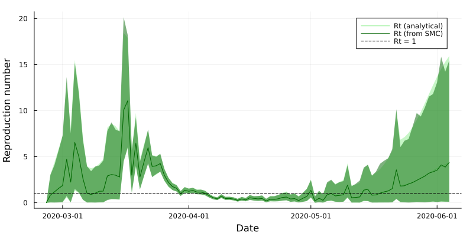
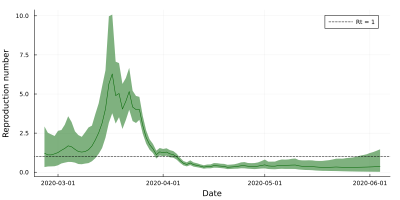
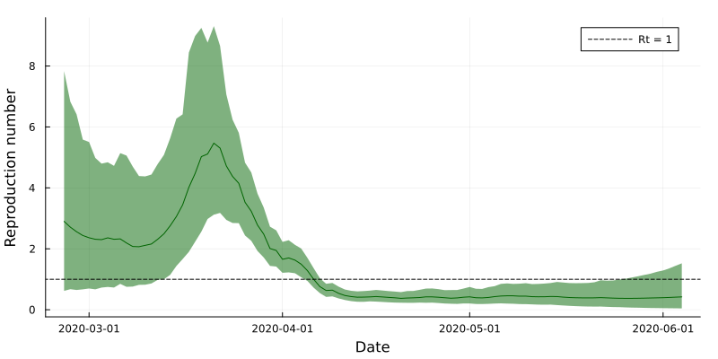

include("../src/LoadData.jl")
Y = loadData("NZCOVID")
using Plots, Measures
bar(Y.date, Y.Ct, color=:darkblue, size=(800,400), xlabel="Date", ylabel="Reported cases", label=false, margins=3mm)8 Introductory models


We begin by fitting the three example models introduced in Section 3.2 of Chapter 3 to real-world data.
First we load and plot the data we will use for our examples. These are the national reported cases for the first 100 days of the COVID-19 pandemic in Aotearoa New Zealand (Ministry of Health NZ 2024), downloaded from here.
8.1 Example 1: indepdendent daily estimates
In this example, we use a Gamma\((1, 0.2)\) prior distribution for \(R_t\) which forms the state-space transition distribution:
\[ R_t \sim \text{Gamma}(1, 1/0.2) \]
and use the Poisson renewal model (with a Gamma(2.36, 27.4) distribution for the serial interval) for the observation distribution:
\[ C_t | R_t, C_{1:t-1} \sim \text{Poisson}\left(R_t \sum_{u=1}^{u_{max}} C_{t-u} \omega_u\right) \]
We write this as a hidden-state model in Julia:
function ExampleModel1(θ, Y::DataFrame, opts::Dict)
# Extract frequently used options
T = opts["T"] # Number of time steps
N = opts["N"] # Number of particles to use
# Define the serial interval
ω = pdf.(Gamma(2.36, 2.74), 1:100) # (Unnormalised) serial interval
ω = ω/sum(ω) # Normalise the serial interval
# Initialise output matrices
R = zeros(N, T) # Matrix to store particle values
W = zeros(N, T) # Matrix to store model weights
# Run the filter
for tt = 2:T
# "Project" according to the state-space model
R[:,tt] = rand(Gamma.(1, 1/0.2), N)
# Weight according to the observation model
Λ = sum(Y.Ct[tt-1:-1:1] .* ω[1:tt-1])/sum(ω[1:tt-1]) # Calculate the force-of-infection
W[:,tt] = pdf.(Poisson.(R[:,tt] .* Λ), Y.Ct[tt])
# Resample
inds = wsample(1:N, W[:,tt], N; replace=true)
R[:, tt] = R[inds, tt]
end
return(R, W)
end
Tip
As there is no autocorrelation in the state-space model, and the observation distributon depends only on the hidden-states at time \(t\), we do not need to bother with any fixed-lag resampling.
There are no parameters to estimate, so we simply fit this model to the data:
# Specify bootstrap filter options (the {String, Any} term allows us to use any type of value in this dictionary)
opts = Dict{String, Any}("N" => 1000, "T" => 100)
# Fit the model
(R, W) = ExampleModel1(missing, Y, opts) # θ is missing as there are no "parameters" in this model!
# Extract posterior means and credible intervals
MeanRt = vec(mean(R, dims=1)) # "dims=1" tells Julia to take column-wise means, vec(.) turns the resulting 1xN matrix into a vector
LowerRt = [quantile(Rt, 0.025) for Rt in eachcol(R)]
UpperRt = [quantile(Rt, 0.975) for Rt in eachcol(R)]We can also find the posterior means and credible intervals for this model analytically (Section 1.2), useful for checking our algorithm.
Code
(MeanRtTrue, LowerRtTrue, UpperRtTrue) = (zeros(opts["T"]), zeros(opts["T"]), zeros(opts["T"])) # Pre-allocate results vectors
(a0, b0) = (1, 1/5) # Set prior parameters
# Define the serial interval
ω = pdf.(Gamma(2.36, 2.74), 1:100) # (Unnormalised) serial interval
ω = ω/sum(ω) # Normalise the serial interval
for tt = 2:opts["T"]
# Find the posterior distribution on day t
a = a0 + Y.Ct[tt]
b = b0 + sum(Y.Ct[tt-1:-1:1] .* ω[1:tt-1])/sum(ω[1:tt-1])
PosteriorDist = Gamma(a, 1/b)
# Save the results
MeanRtTrue[tt] = mean(PosteriorDist)
LowerRtTrue[tt] = quantile(PosteriorDist, 0.025)
UpperRtTrue[tt] = quantile(PosteriorDist, 0.975)
endPlotting the estimates from the bootstrap filter against the analytical posterior mean and credible intervals demonstrates the SMC approxmation is high quality.
# Process the results and plot
pltR = plot(size=(800,400), xlabel="Date", ylabel="Reproduction number", margins=3mm)
pltR = plot!(pltR, Y.date, MeanRtTrue, ribbon=(MeanRtTrue-LowerRtTrue, UpperRtTrue-MeanRtTrue), color=:lightgreen, label="Rt (analytical)")
pltR = plot!(pltR, Y.date, MeanRt, ribbon=(MeanRt-LowerRt, UpperRt-MeanRt), color=:darkgreen, label="Rt (from SMC)")
hline!([1], color=:black, linestyle=:dash, label="Rt = 1")

8.2 Example 2: temporally smoothed estimates
Figure 8.2 demonstrates considerable variability in \(R_t\) estimates. In pratice, we want to produce smoothed estimates (Section 1.2.2).
We update the state-space model to use a Gaussian random walk on \(\log R_t\):
\[ \log R_t | \log R_{t-1} \sim \text{Normal}(\log R_{t-1}, \sigma) \]
and retain the same observation model:
\[ C_t | R_t, C_{1:t-1} \sim \text{Poisson}\left(R_t \sum_{u=1}^{u_{max}} C_{t-u} \omega_u\right) \]
In Julia:
function ExampleModel2(θ, Y::DataFrame, opts::Dict)
# Extract frequently used options
T = opts["T"] # Number of time steps
N = opts["N"] # Number of particles to use
L = opts["L"] # Length of fixed-lag resampling
# Define the serial interval
ω = pdf.(Gamma(2.36, 2.74), 1:100) # (Unnormalised) serial interval
ω = ω/sum(ω) # Normalise the serial interval
# Initialise output matrices
R = zeros(N, T) # Matrix to store particle values
W = zeros(N, T) # Matrix to store model weights
# Sample from initial distribution
R[:,1] = rand(Uniform(0, 10), N)
# Run the filter
for tt = 2:T
# Project according to the state-space model
R[:,tt] = exp.(rand.(Normal.(log.(R[:,tt-1]), θ[1])))
# Weight according to the observation model
Λ = sum(Y.Ct[tt-1:-1:1] .* ω[1:tt-1])/sum(ω[1:tt-1]) # Calculate the force-of-infection
W[:,tt] = pdf.(Poisson.(R[:,tt] .* Λ), Y.Ct[tt])
# Resample
inds = wsample(1:N, W[:,tt], N; replace=true)
R[:, max(tt - L, 1):tt] = R[inds, max(tt - L, 1):tt]
end
return(R, W)
endNow we have parameter \(\sigma\) to estimate. We use PMMH to do this. First, we define our model-fitting options:
opts = Dict(
# Bootstrap filter options
"T" => size(Y, 1), # Number of time-steps
"N" => 1000, # Number of particles
"L" => 50, # Fixed-lag resampling length
"ω" => pdf.(Gamma(2.36, 2.74), 1:100), # Serial interval
"pR0" => Uniform(0, 10), # Prior on Rt at t = 0
"predictiveValues" => false, # Whether to calculate predictive cases
# PMMH options
"nChains" => 3, # Number of chains
"chunkSize" => 100, # Number of iterations per chunk
"maxChunks" => 50, # Maximum number of chunks
"maxRhat" => 1.05, # Stopping criterion: maximum Rhat value
"minESS" => 100, # Stopping criterion: minimum effective sample size
"showChunkProgress" => true, # Whether to show progress of each chunk
"propStdDevInit" => [0.1], # Initial proposal standard deviation (this is adaptively fit)
"paramPriors" => [Uniform(0, 1)],
"initialParamSamplers" => [Uniform(0.1, 0.3)],
"paramLimits" => [(0, 1)],
"paramNames" => ["σ"]
);And the PMMH() function handles the rest:
include("../src/PMMH.jl")
(θ, diag) = PMMH(ExampleModel2, Y, opts; verbose=false) # Set verbose = true to see
Chains(θ, opts["paramNames"])Chains MCMC chain (200×1×3 Array{Float64, 3}):
Iterations = 1:1:200
Number of chains = 3
Samples per chain = 200
parameters = σ
Summary Statistics
parameters mean std naive_se mcse ess rhat
Symbol Float64 Float64 Float64 Float64 Float64 Float64
σ 0.2462 0.0493 0.0020 0.0049 113.5474 1.0251
Quantiles
parameters 2.5% 25.0% 50.0% 75.0% 97.5%
Symbol Float64 Float64 Float64 Float64 Float64
σ 0.1661 0.2142 0.2347 0.2823 0.3590
Which tells us \(\sigma = 0.24 \ (0.17, 0.33)\).
In isolation, this isn’t a particularly useful quantity. We actually care about the estimates of \(R_t\), ideally after accouting for uncertainty about \(\sigma\). We do this by marginalising out this parameter - this is performed by the marginalPosterior() function.
First, we need to specify two more options, to tell the function to run the bootstrap filter at 100 samples of \(\sigma\), for 1,000 particles each (a total of 100,000 particles).
opts["posteriorNumberOfParticles"] = 1000;
opts["posteriorParamSamples"] = 100;We can then call the marginalPosterior() function, also processing and plotting the output:
include("../src/MarginalPosterior.jl")
R = marginalPosterior(ExampleModel2, θ, Y, opts; showProgress=true)
(MeanRt2, MedianRt2, LowerRt2, UpperRt2) = processResults(R) # This is a helper function which calculates columnwise summary statistics
pltR2 = plot(size=(800,400), xlabel="Date", ylabel="Reproduction number", margins=3mm)
pltR2 = plot!(pltR2, Y.date, MeanRt2, ribbon=(MeanRt2-LowerRt2, UpperRt2-MeanRt2), color=:darkgreen, label=false)
hline!([1], color=:black, linestyle=:dash, label="Rt = 1")
Which demonstrates much smoother estimates of \(R_t\). However, this model does not allow for observation noise, other than in the stochasticity in transmission (the Poisson renewal model). In practice, reported cases are noisy observations of true infections - the final example accounts for this.
8.3 Example 3: with observation noise
To allow for observation noise, we now employ the Poisson renewal model in the state-space model, using \(I_t\) to represent unobserved infections:
\[ \log R_t | \log R_{t-1} \sim \text{Normal}(\log R_{t-1}, \sigma) \]
\[ I_t | R_t, I_{1:t-1} \sim \text{Poisson}\left(R_t \sum_{u=1}^{u_{max}} I_{t-u} \omega_u\right) \]
and assume that reported cases follow a negative binomial distribution with mean \(I_t\) and variance \(I_t + \phi I_t^2\) (the observation model):
\[ C_t | I_t \sim \text{Negative Binomial}\left(r=\frac{1}{\phi}, p=\frac{1}{1+\phi I_t} \right) \]
For simplicity, we use the same PMF for \(\omega_u\) here, even though it now represents the generation time distribution (time from infection-to-infection), rather than the serial interval (time from reporting-to-reporting).
We have two fixed parameters: \(\sigma\) and \(\phi\), with the latter controlling the level of observation noise.
Writing this as a bootstrap filter in Julia:
function ExampleModel3(θ, Y::DataFrame, opts::Dict)
# Extract frequently used options
T = opts["T"] # Number of time steps
N = opts["N"] # Number of particles to use
L = opts["L"] # Length of fixed-lag resampling
# Define the serial interval
ω = pdf.(Gamma(2.36, 2.74), 1:100) # (Unnormalised) serial interval
ω = ω/sum(ω) # Normalise the serial interval
# Initialise output matrices
R = zeros(N, T) # Matrix to store particle values
I = zeros(N, T) # Local infections
W = zeros(N, T) # Matrix to store model weights
# Sample from initial distribution
R[:,1] = rand(Uniform(0, 10), N)
I[:,1] = rand.(opts["pI0"], N)
# Run the filter
for tt = 2:T
# Project according to the state-space model
R[:,tt] = exp.(rand.(Normal.(log.(R[:,tt-1]), θ[1])))
# Calculate force-of-infection and sample infections
Λ = sum(I[:,tt-1:-1:1] .* opts["ω"][1:tt-1]', dims=2)
I[:,tt] = rand.(Poisson.(R[:,tt] .* Λ))
# Weight according to the observation model
r = 1/θ[2]
p = 1 ./ (1 .+ θ[2] * I[:,tt])
W[:,tt] = pdf.(NegativeBinomial.(r, p), Y.local[tt])
# Resample
inds = wsample(1:N, W[:,tt], N; replace=true)
R[:, max(tt - L, 1):tt] = R[inds, max(tt - L, 1):tt]
I[:, max(tt - L, 1):tt] = I[inds, max(tt - L, 1):tt]
end
# Store output as three-dimensional array
X = zeros(N, T, 2)
X[:,:,1] = R
X[:,:,2] = I
return(X, W)
endThis time we use fitModel() function to perform parameter inference and marginalistion in a single step. We also update some PMMH options to reflect the additional parameter being estimated.
include("../src/FitModel.jl")
opts["pI0"] = Dirac(1) # Initial distiribution for It at t = 0, we assume one case to start the epidemic
opts["propStdDevInit"] = sqrt.([0.1, 0.01])
opts["paramPriors"] = [Uniform(0, 1), Uniform(0, 1)]
opts["initialParamSamplers"] = [Uniform(0.1, 0.3), Uniform(0.01, 0.03)]
opts["paramLimits"] = [(0, 1), (0, 1)]
opts["paramNames"] = ["σ", "ϕ"]
opts["stateNames"] = ["Rt", "It"]
(df_states, df_params, θ, diag) = fitModel(ExampleModel3, Y, opts; skipResamplingPMMH=false);Interrogating the output, we first check the parameter estimates:
display(df_params)2 rows × 6 columns
| param | m | l | u | rhat | ess | |
|---|---|---|---|---|---|---|
| String | Float64 | Float64 | Float64 | Float64 | Float64 | |
| 1 | σ | 0.228492 | 0.142113 | 0.36593 | 1.04315 | 126.778 |
| 2 | ϕ | 0.0189256 | 0.000239832 | 0.0741912 | 1.024 | 111.536 |
And plot the reproduction number estimates:
df_Rt = df_states[df_states.variable.=="Rt",:]
df_It = df_states[df_states.variable.=="It",:]
pltR3 = plot(size=(800,400), xlabel="Date", ylabel="Reproduction number", margins=3mm)
pltR3 = plot!(pltR3, df_Rt.date, df_Rt.mean, ribbon=(df_Rt.mean-df_Rt.lower, df_Rt.upper-df_Rt.mean), color=:darkgreen, label=false)
pltR3 = hline!([1], color=:black, linestyle=:dash, label="Rt = 1")
Showing even smoother estimates of \(R_t\). In example 2, all unexpected variation in case counts must be attributed to changes in the reproduction number, whereas this model allows for noise in the case data themselves.
These still aren’t the best possible estimates, however! In this example, many of the reported cases were infected overseas - we don’t account for these here, hence these \(R_t\) estimates are biased upward.